Ingresá el código del taller para acceder a los materiales interactivos.
Código provisto por el instructor al inicio de la clase.
Una guía práctica para ayudarte en tu día a día.
La Inteligencia Artificial es una tecnología que ayuda a las personas a resolver problemas, automatizar tareas y obtener información de manera rápida, simulando algunas capacidades del pensamiento humano.
Los chats de IA son la forma más accesible de utilizar esta tecnología: reciben instrucciones y devuelven respuestas en distintos formatos.
Un prompt es la instrucción o pedido que le hacemos al Chat de la IA. Es simplemente la forma en que nos comunicamos con esta.
"Ayudame con mi negocio"
"Escribí un mensaje de WhatsApp avisando un 20% de descuento este fin de semana en mi tienda de ropa"
La IA no adivina. Trabaja con la información que recibe.
Cuando hagas un pedido a la IA, intentá incluir estos 5 elementos:
¿Quién es la IA? Define su experiencia, tono y perspectiva.
"Actúa como un especialista en marketing para comercios."¿Qué debe hacer exactamente? Usa verbos de acción claros.
"Escribe un mensaje promocional para enviar por WhatsApp."¿Para quién es? ¿Cuál es el objetivo?
"Tengo una tienda de ropa femenina y quiero informar una promoción de fin de semana."¿Cómo querés la salida? Mensaje, email, lista, tabla.
"Presenta la respuesta como un mensaje corto de WhatsApp."¿Qué condiciones debe cumplir la respuesta?
"Menos de 5 líneas, tono amigable, incluir un 20% de descuento.""Hola. Acabo de recibir mi pedido y el producto llegó roto. La verdad estoy muy decepcionada porque lo necesitaba para este fin de semana. Quiero saber cómo van a solucionar este problema."
Usá la IA para redactar una respuesta profesional, empática y con solución concreta. Las próximas slides muestran la diferencia entre un prompt malo y uno completo.
Hola María,
Lamentamos que hayas recibido el producto dañado y entendemos tu decepción.
Nos disculpamos por esta experiencia, siendo una clienta valiosa desde hace 2 años.
Enviamos una nueva unidad sin costo. No devuelvas la dañada.
Gracias. Quedamos a tu disposición.
Mejor contexto = Mejor respuesta.
La IA es tan buena como las instrucciones que recibe.
Completá los campos con tu situación real. El prompt se arma automáticamente para que lo copies en ChatGPT.
Usá el ícono de imagen o adjunto en el chat.
Escribí tu prompt junto con la imagen.
No es lo mismo preguntarle algo a ChatGPT que encargarle una tarea. Para trabajar bien con inteligencia artificial, primero hay que entender qué tipo de tarea tienes delante.
Según el tipo de tarea, usarás ChatGPT de una forma distinta. Mezclarlas es uno de los errores más comunes — y tiene solución fácil.
Tareas puntuales. Algo que haces una vez: un email, un resumen, comparar opciones, preparar una reunión.
Una misma temática. Un tema al que vuelves muchas veces: tu negocio, tu canal, una campaña, una oposición.
Tareas repetitivas. Una función que quieres automatizar: responder dudas, generar informes, corregir textos.
La clave: el contexto.
Los proyectos funcionan como una carpeta inteligente. Les das contexto una sola vez — tu objetivo, tu tono, tus documentos — y ChatGPT parte con ventaja cada vez que trabajas dentro.
Van un paso más allá: son asistentes especializados listos para repetir la misma tarea una y otra vez, sin que tengas que explicar nada de nuevo.
Los Proyectos de ChatGPT permiten organizar conversaciones, archivos e instrucciones alrededor de un tema o trabajo específico. Son muy útiles cuando quieres que ChatGPT mantenga siempre presente el contexto de un proyecto concreto, sin tener que repetirlo en cada nuevo chat.
Evita explicar en cada conversación de qué trata el proyecto, cuál es el público objetivo, qué tono debe utilizar y cuáles son sus objetivos.
Ve a la sección Proyectos en ChatGPT, crea un nuevo proyecto o abre uno existente, y pega esta información en el apartado de Instrucciones del proyecto.
Este proyecto trata sobre un curso gratuito de inteligencia artificial de 3 días. El público son emprendedores, creadores de contenido, profesionales y personas que quieren aprender IA práctica desde cero.
El tono debe ser claro, directo, cercano y práctico. Evita sonar demasiado técnico o demasiado publicitario. Prioriza ejemplos aplicables a negocios, creación de contenido, automatizaciones, productividad y formación online.
Los GPTs personalizados permiten crear asistentes especializados para una tarea concreta. En lugar de usar ChatGPT de forma general, puedes configurar un GPT con instrucciones propias para que actúe siempre con un rol, criterios y formato de respuesta específicos.
Ve a Explorar GPTs → Crear → Configurar y pega la instrucción en el campo “Instrucciones” del GPT personalizado. También puedes añadir un nombre, una descripción breve y, si lo deseas, algunos iniciadores de conversación.
Eres un analista experto en colaboraciones entre marcas y creadores de contenido. Tu objetivo es ayudar a creadores, influencers, youtubers, newsletters, podcasters o profesionales con audiencia a analizar propuestas de colaboración recibidas por email o mensaje privado.
Detecta posibles problemas: falta de información, petición demasiado genérica, ausencia de presupuesto, condiciones poco claras, promesas exageradas, poca relación con la audiencia, producto dudoso, urgencia artificial o propuesta demasiado abierta.
Enumera qué habría que preguntar antes de aceptar o avanzar: formato, fecha estimada, entregables, derechos de uso, duración de la campaña, aprobación previa, condiciones de pago, briefing, producto, enlaces o expectativas de la marca.
Da una recomendación clara: aceptar y pedir más información, negociar, responder con condiciones, rechazar educadamente, pedir aclaraciones antes de decidir.
¿Lo voy a hacer una sola vez? → Chat normal con un buen prompt. Simple y directo.
¿Es un tema al que voy a volver? → Proyecto. Dale contexto una vez y trabaja con continuidad.
¿Quiero que siempre funcione igual? → GPT personalizado. Crea tu asistente especializado.
Empezamos por las tareas puntuales: la forma más sencilla de mejorar desde ya. El siguiente paso es aprender a construir un buen prompt.
Aprovechá para practicar los prompts y preparar preguntas para la segunda parte.
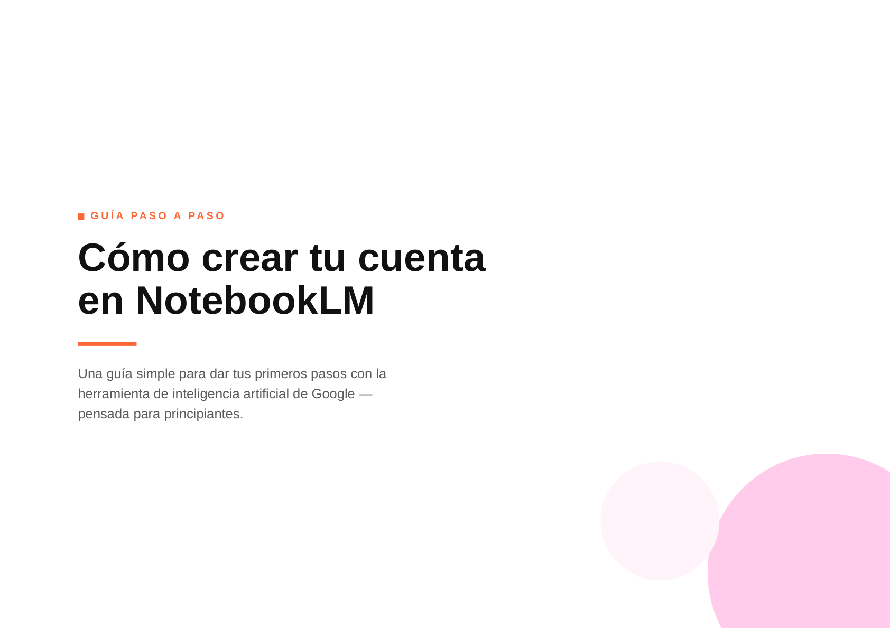
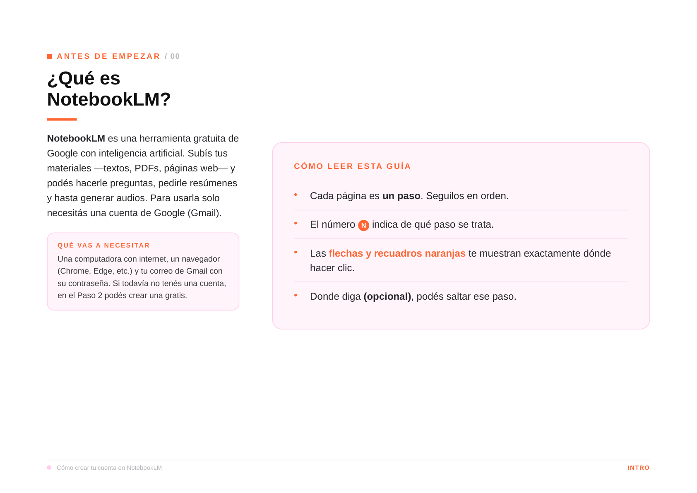
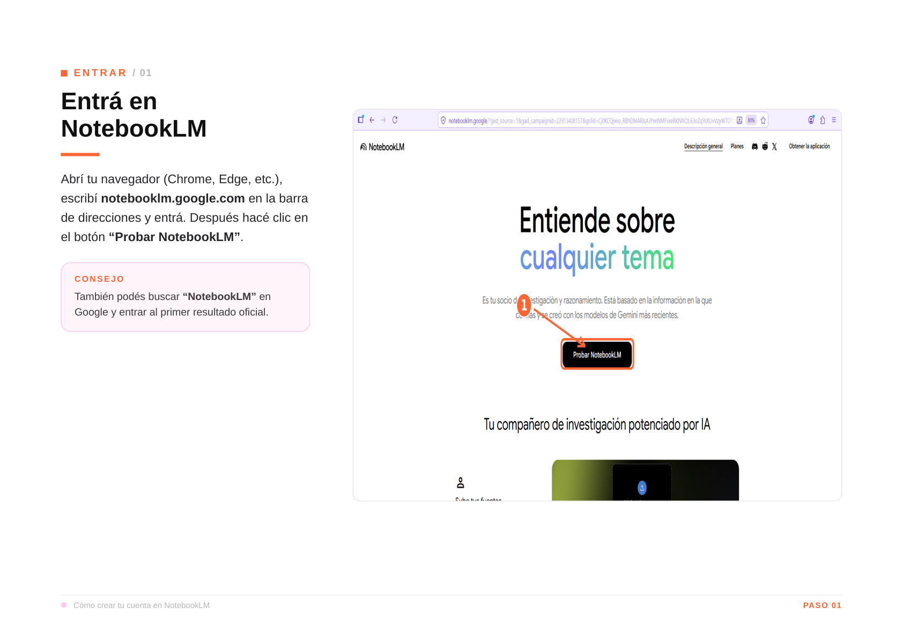
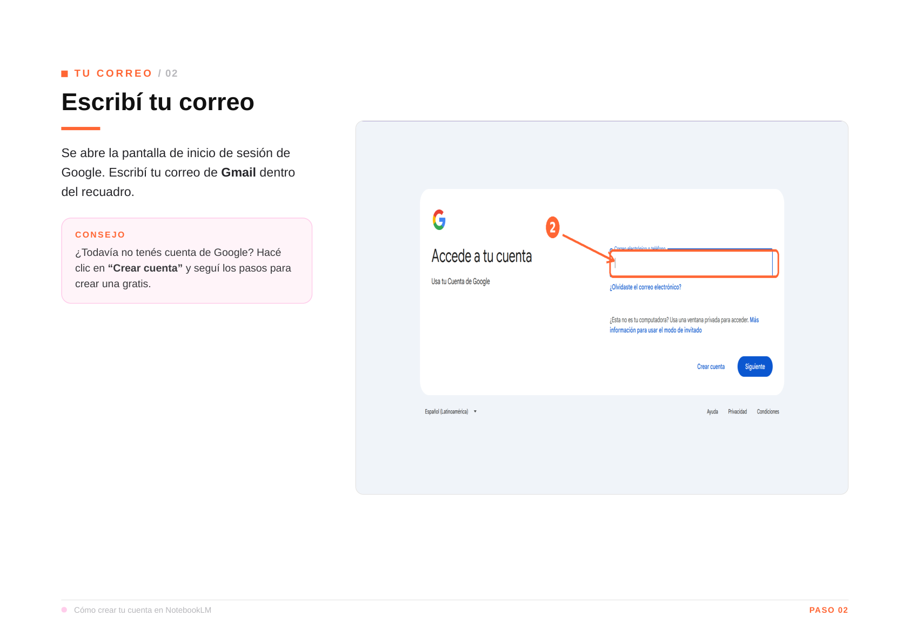
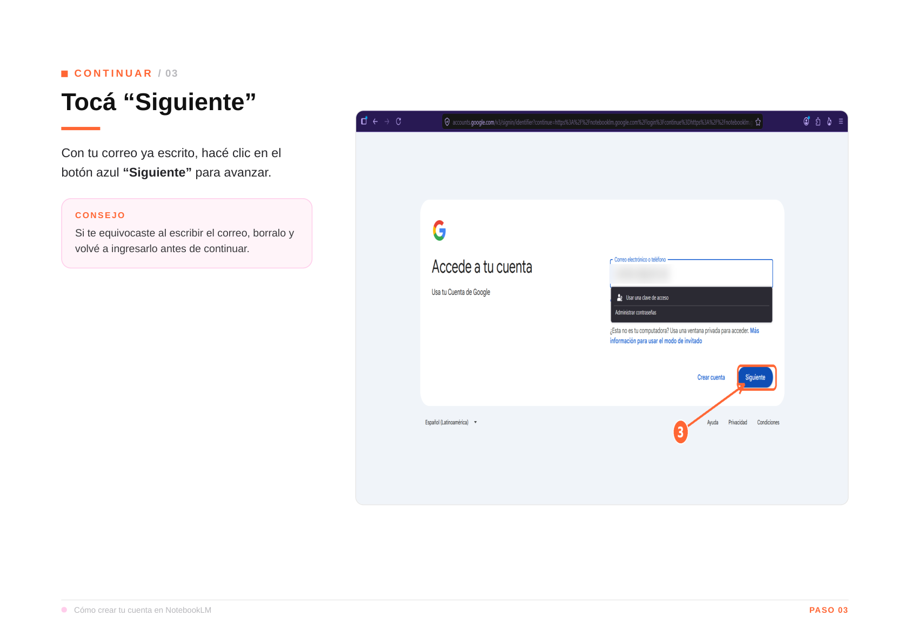
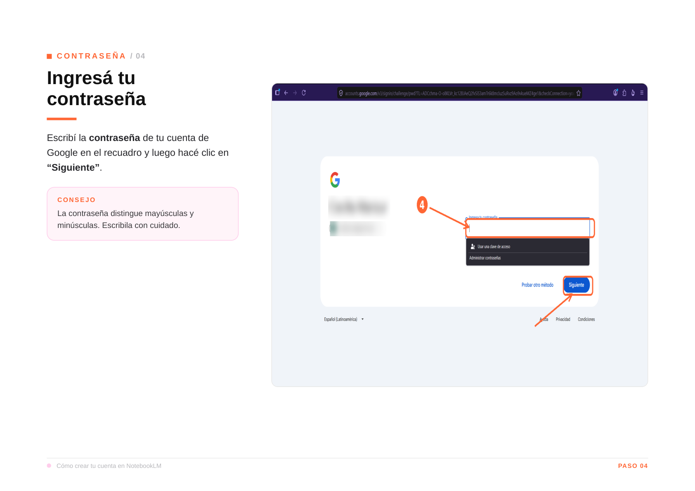
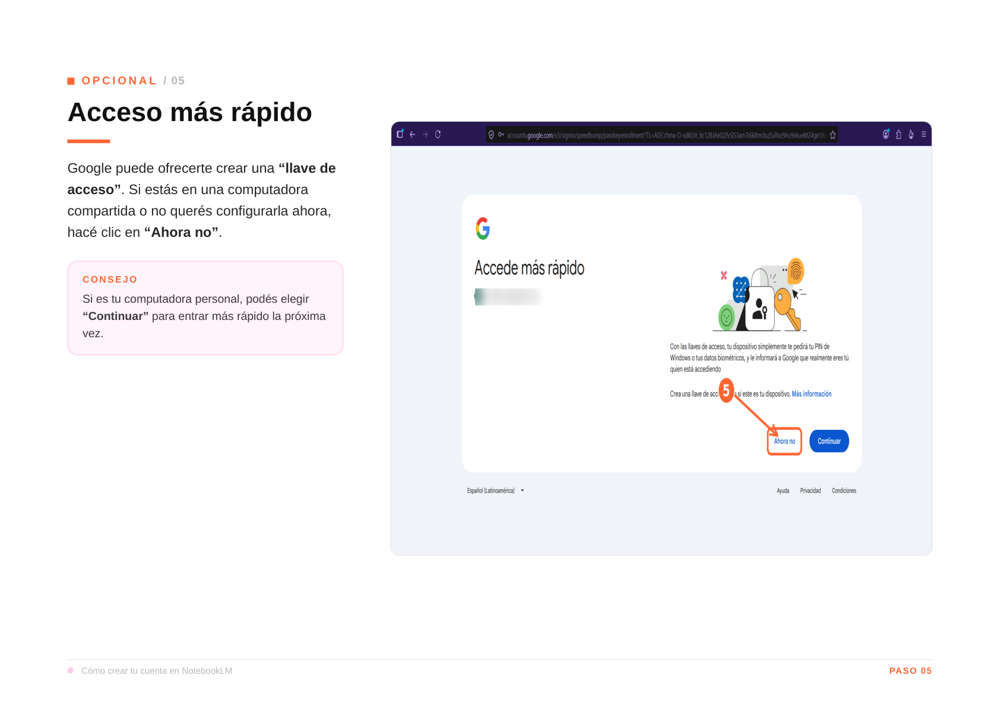
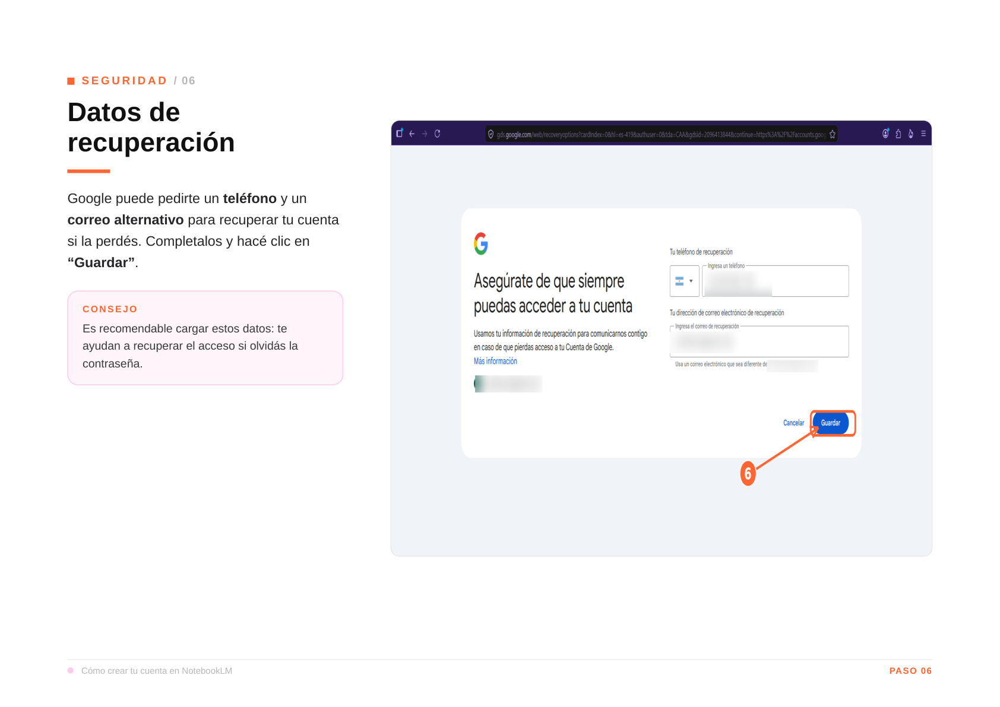
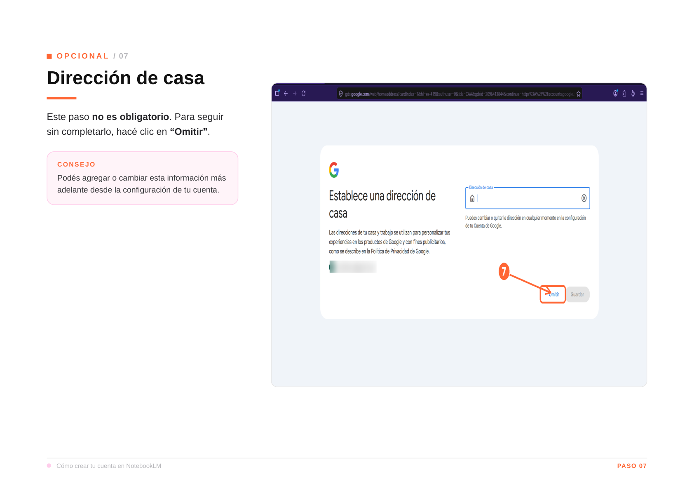
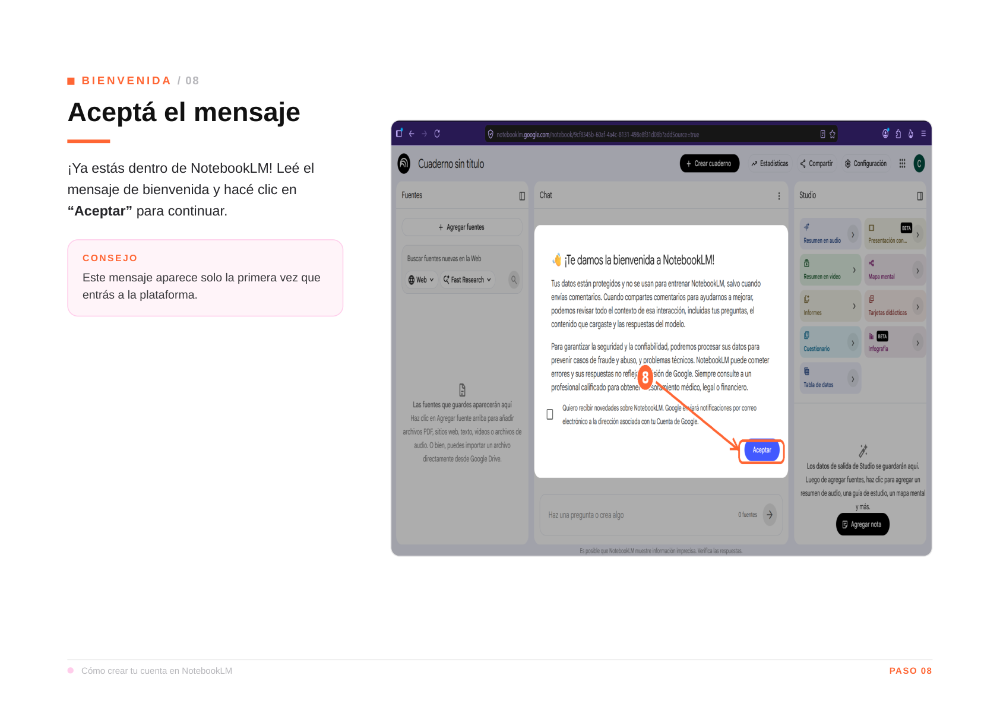
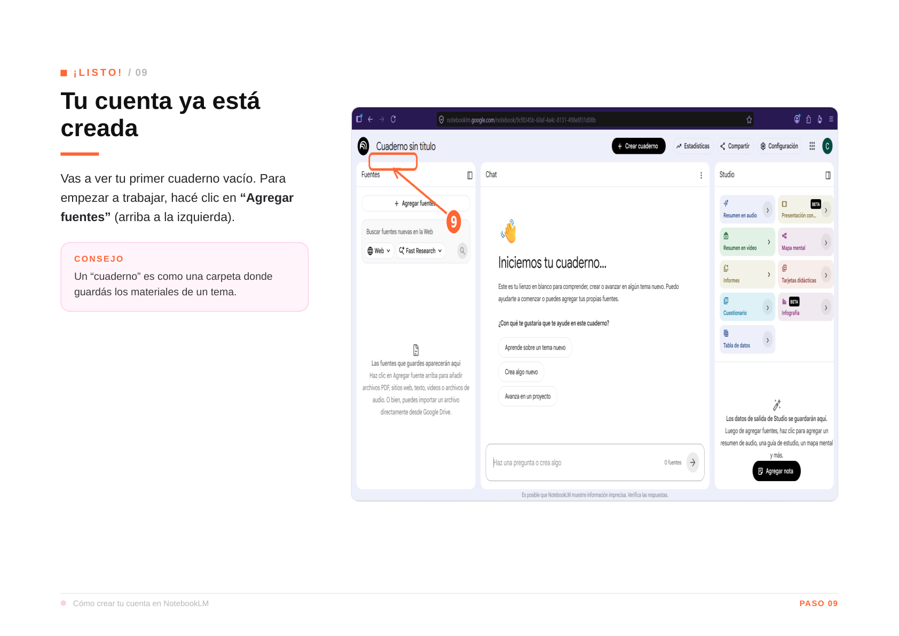
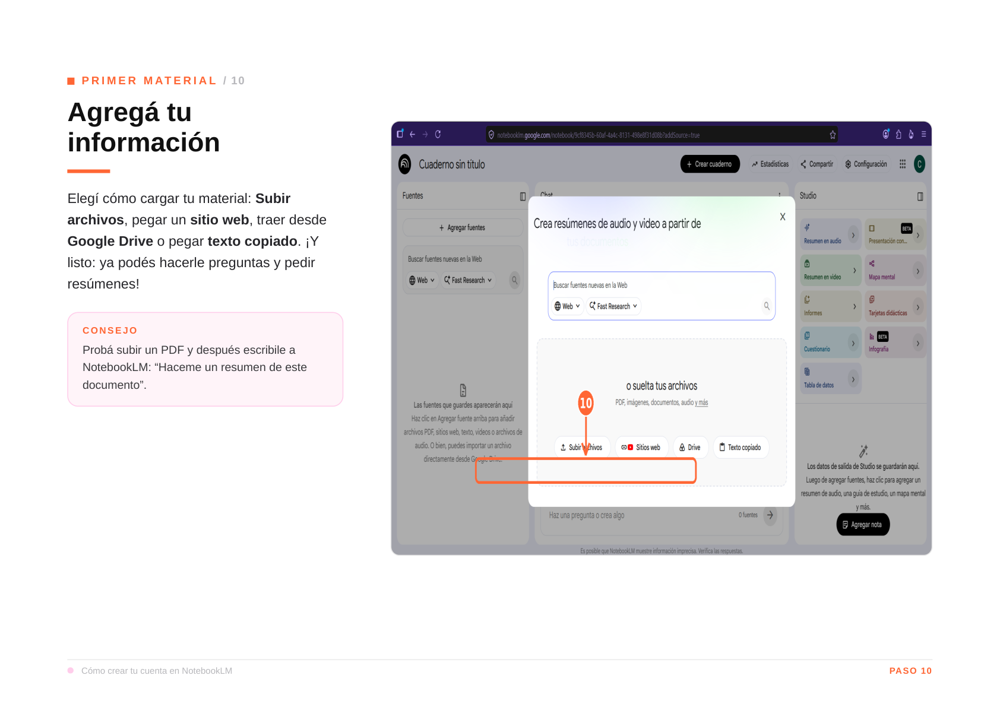
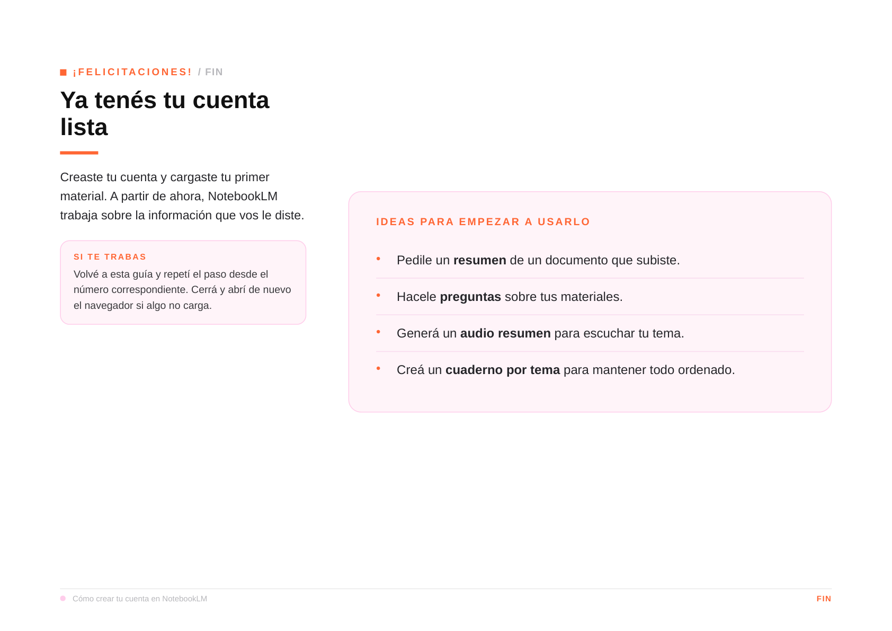
La herramienta busca dentro del documento y responde en segundos, sin que leas todo.
Seleccioná una pregunta, copiala y probala en NotebookLM con un documento tuyo.
Trabaja con lo que le escribís.
Ideal para crear contenido, redactar respuestas y generar ideas.
Trabaja con los documentos que le compartís.
Ideal para analizar catálogos, contratos y listas de precios.
Usá ChatGPT para:
Usá NotebookLM para:
Cada pregunta que hagas y cada prompt que pruebes te ayudará a obtener mejores resultados.
Recordá:
— La IA no premia al que más sabe de tecnología.
— Premia al que mejor sabe explicar lo que necesita.